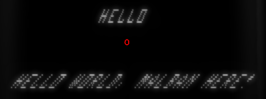

String italic
If your Vectrex has only the slightest "drift" - String output will be "italic".
Every vectrex has drift - even with a completely new cap kit - there is no way arround it - the hardware is not "good" enought to be completely drift free.
Due to technical reasons - (see below) the drift in combination with the BIOS raster print routines result in text output being italic.
(Vide emulates drift, you can change the drift in the configuration)
Look at the picture above. It is printed with exactly the same routine.
LDU #shortText ; address of string
LDA #$20 ; Text position relative Y
LDB #-$20 ; Text position relative X
JSR Print_Str_d ; Vectrex BIOS print routine
LDU #longText ; address of string
LDA #-$20 ; Text position relative Y
LDB #-$7f ; Text position relative X
JSR Print_Str_d ; Vectrex BIOS print routine
BRA main ; and repeat forever
shortText:
DB "HELLO" ; only capital letters
DB $80 ; $80 is end of string
longText:
DB "HELLO WORLD, MALBAN HERE!" ; only capital letters
DB $80 ; $80 is end of string
The drift "in" strings is in direct relation to the number of characters of the string. Long strings always are more italic. Depending on the drift of your vectrex - it may even be, that you can not discern long strings anymore.
Vec Text Width
Is the STRENGTH of a string, each string is printed with a strength of Vec_Text_Width and with a scale (if you want to call it that when strings are printed) of #OfChars*18.
The "scale" of a string relates ALWAYS directly to the count of characters! No matter how big or small the characters printed, the scale is always 18*#characters.
The large string above consists of 25 letters. 25 * 18 = 450 (or $1c2).
The scale in vectrex is always the "time" needed for the line to be completely drawn. Each vectrex string consists of 7 lines, but you also have to go back to draw the next line (6 times) - and have a little overhead, since you are not really drawing all the time.
What it come down to is that you need about CONST+(7*2*18)*(#Characters) cycles for a String to be drawn. The CONST is ~ 1000 and denotes the overhead of the BIOS print_str routine. In the above example the exact cycles are 7243 cycles (calculated by the simplyfied formular would be: 7300)
If you want to print strings without flicker (lower 50Hz) you can print about 4 lines of the above kind, or said differently: 100 characters.
Drift -> italic
The "drift" can be seen as a tiny movement of the electron beam position. Always, all the time (except when zeroing). Something fascinating is happening over to the left - the beam always wants to go there - even if you tell him not to!
Time:
1 cycle = 1 / 1500000s = 0,66 micro seconds
One line of above large string takes (450cycles) about 0,0003s = 0,4 ms to print.
A bad - but not really uncommon - drift could be 1mm to the left each 0,5ms.
Note:
It appears the drift is (at most) only slightly influenced by the "strength", meaning in general the drift only is in one direction (and appears to be most of the time to the left (negative X) )!
A BIOS printed string is actually a GIGANTIC (in timing terms) single vector list of the following format:
One line right to left
One line left to right
One line right to left
One line left to right
One line right to left
One line left to right
One line right to left
One line left to right
One line right to left
One line left to right
One line right to left
One line left to right
One line right to left
Each of these lines - as above said - takes (for the large String) 450 cycles! This means while printing the complete String the drift moves the beam about 12mm to the left! You can see that in 7 "steps" of about 2mm with each line of the string. This is what makes it italic!